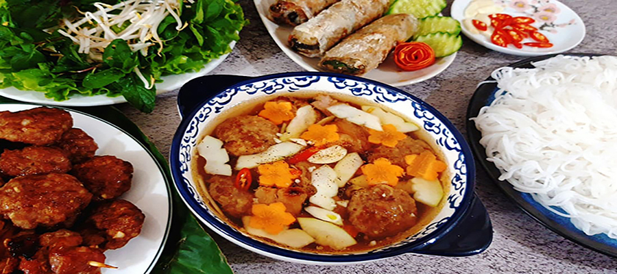
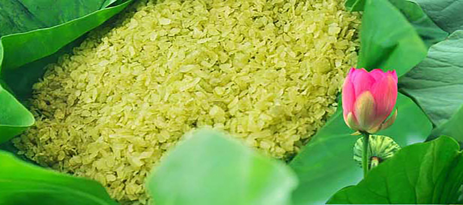
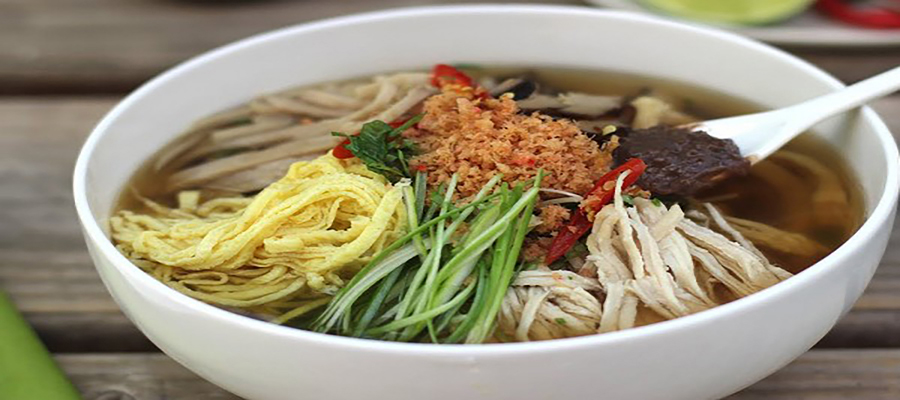

Hà Nội - Tinh hoa ẩm thực
Chả cá Lã Vọng

Chả được làm từ cá lăng, lọc thịt tẩm ướt gia vị rồi đem nướng. Muốn ngon bạn phải ăn nó khi còn nóng, khi ăn kèm với bún, bánh đa nướng, rau thơm, lạc rang, hành củ và chấm với mắm tôm.
Địa chỉ tham khảo:
- Chả Cá Vọng Ngư: 29 Nguyễn Chí Thanh, Ba Đình
- Chả cá Thăng Long: Số 21 Đường Thành, Q.Hoàn Kiếm
- Chả cá Lão Ngư: Số 171 Thái Hà, Q.Hoàn Kiếm
Bánh cuốn Thanh Trì

Bánh cuốn được tráng một cáchh khéo léo với lớp mọc bọc nhân, ăn kèm với chả, rau thơm và nước chấm. Đặc biệt là phần nhân, được làm bằng thịt băm nhỏ, nấm mèo, trứng và hành khô.
Địa chỉ tham khảo:
- Bánh cuốn Bà Hoành: 66 Tô Hiến Thành, Hai Bà Trưng, Hà Nội
- Bánh cuốn Hàng Bồ: 57A Hàng Bồ, Hà Nội.
Bún chả Hà Nội
Hương vị của món bún chả này ngon ngây ngất, ăn một bát lại muốn ăn một bát tiếp theo. Tổng thống Obama cũng đã thử món này trong một chuyến công tác tại Việt Nam, ngài cũng phải tấm tắc khen ngợi vị ngon của món bún chả bởi vị ngon từ thịt nướng được tẩm ướp đầy đủ được ăn chung với rau sống, bún và nước chấm chua ngọt.
Địa chỉ tham khảo:
- Bún chả Cửa Đông: 41 Cửa Đông, Q.Hoàn Kiếm
- Bún chả Đắc Kim: 1 Hàng Mành, Q.Hoàn Kiếm
- Bún chả Sinh Từ: 57 Nguyễn Khuyến, Q.Đống Đa
Phở Hà Nội

Phở Hà Nội là món ăn truyền thống lâu đời, mang hương vị riêng của đất Bắc. Sự khác biệt dễ nhận thấy nhất giữa phở Hà Nội và phở trong Nam chính là bánh phở dẹp và to hơn, đồng thời, một số nơi sẽ ăn kèm phở với quẩy. Khách du lịch Hà Nội có thể chọn phở gà, phở bò hay phở ngan tùy theo sở thích ăn uống của mỗi người.
Địa chỉ tham khảo:
- Phở Gia Truyền: 49 Bát Đàn, Q.Hoàn Kiếm
- Phở Thìn: 13 Lò Đúc, Q.Hai Bà Trưng
- Phở Vui (chuyên bò): 25 Hàng Giấy, Q.Hoàn Kiếm.
Cốm Làng Vòng
Màu xanh mát của cốm cùng mùi thơm dịu nhẹ của cốm tạo nên sức hút cho cốm Làng Vòng - món quà tinh túy của người dân Hà Thành.
Địa chỉ tham khảo:
- Tập thể làng nghề cốm Vòng: Số 36 ngõ 63 Xuân Thủy, Cầu Giấy, Hà Nội
- Cốm Huy Linh: Đường Trần Thái Tông, Dịch Vọng Hậu, Cầu Giấy, Hà Nội
Bún Thang
Bún thang được mệnh danh là :” Thăng Long đệ nhất bún” có lẽ vì sự cầu kỳ trong quá trình làm và chuẩn bị nên món bún này với rất nhiều nguyên liệu như: Nấm, củ cải khô, trứng, thịt gà, giò lụa, rau thơm…
Địa chỉ tham khảo:
- Bún thang Cầu Gỗ: 48 Cầu Gỗ, Q.Hoàn Kiếm
- Bún thang Hàng Hòm: số 2 ngõ Hàng Chỉ, Hàng Hòm, Q.Hoàn Kiếm
- Bún thang Hàng Hành: 29 Hàng Hành, Hoàn Kiếm
Bánh tôm Hồ Tây

Bánh tôm là một món ăn vặt nổi tiếng ở Hà Nội, ai ăn xong cũng phải tấm tắc khen ngợi bởi sự béo ngậy và giòn rụm từ chiếc bánh. Đặc biệt là sự nóng hổi của bánh ăn kèm với rau sống và nước mắm chua ngọt tạo nên một hương vị tuyệt vời.
Địa chỉ tham khảo:
- Bánh tôm Hồ Tây: số 1 Thanh Niên, Tây Hồ
- Bánh tôm Hàng Bồ: 55 Hàng Bồ, Hoàn Kiếm
- Bánh tôm Cô Ầm: ngõ Đồng Xuân, Hàng Chiếu, Hoàn Kiếm
Ngan cháy tỏi Hàng Lược

Ngan được tẩm ướp khéo, ngọt rất sâu, rán ngập trong dầu, tạo lớp da giòn bóng mỡ. Khi cho ra đĩa thưởng thức còn được phủ thêm hành, tỏi thơm lừng, dẻo dẻo mà lại không bị cháy, cũng chẳng bị hăng. Ăn cùng một bát nước chấm gừng ớt sanh sánh, thêm một chút lá húng, mùi tàu là kích thích vị giác đến lạ, ăn một lại thèm ăn hai.
Địa chỉ tham khảo:
- Ngan cháy tỏi hàng Lược: 49 - 51 P. Hàng Lược, Hàng Mã, Hoàn Kiếm, Hà Nội